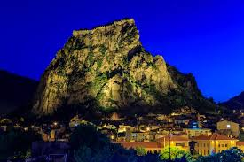
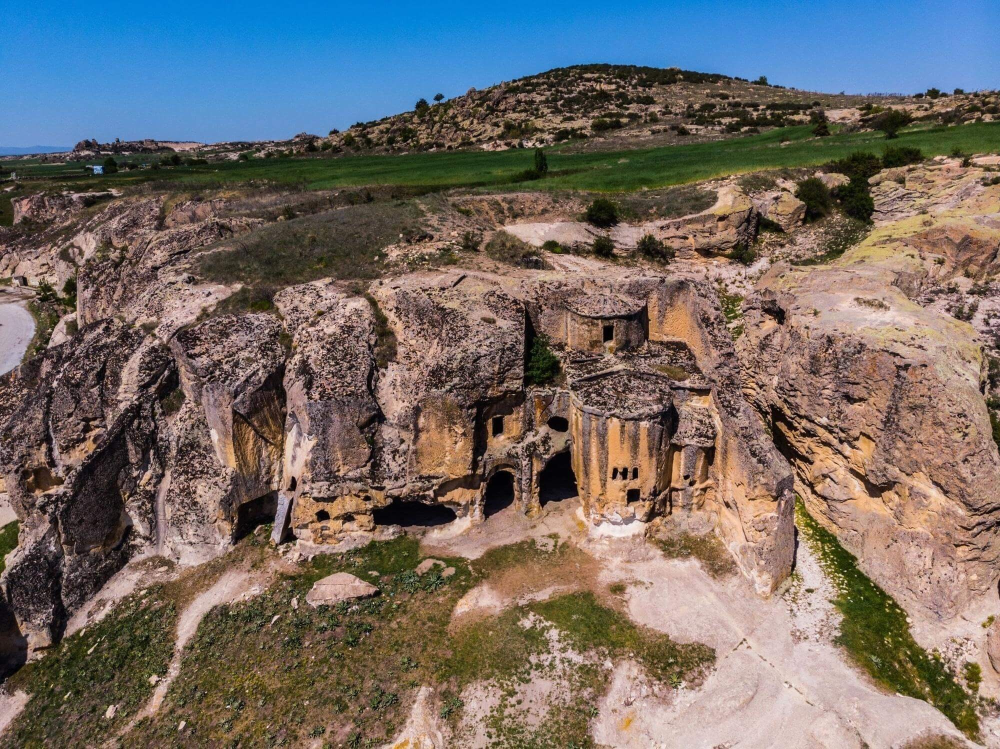
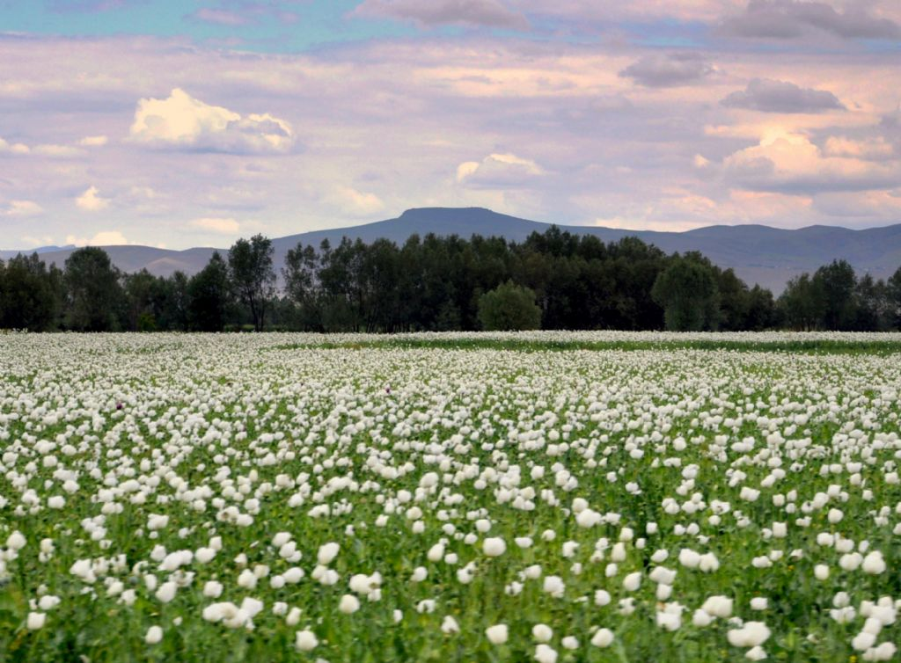
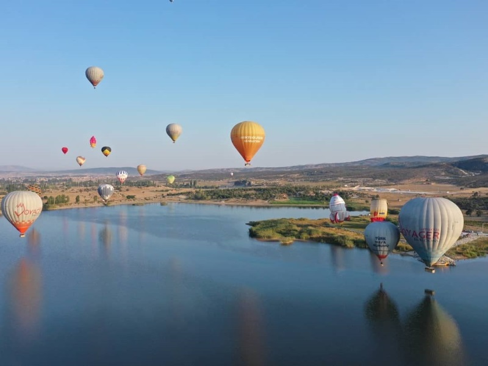

Afyonkarahisar
Afyonkarahisar, tarihi dokusu, termal kaynakları ve eşsiz lezzetleriyle Türkiye'nin en özel şehirlerinden biridir. Friglerden Osmanlı'ya kadar uzanan köklü geçmişiyle dikkat çeker.
Önemli Yerler

Afyon Kalesi
Şehrin simgesi olan kale, volkanik bir kaya üzerine kurulmuştur.

Frig Vadisi
Antik Frig uygarlığından kalan kaya yapılarıyla ünlüdür.

Termal Kaplıcalar
Sağlık turizmi açısından Türkiye'nin önemli merkezlerindendir.

Haşhaşın Başkenti
Afyonkarahisar, Türkiye'nin haşhaş üretim merkezidir. Şehrin adındaki "Afyon" kelimesi de haşhaşın özünden gelir. Haşhaşlı lokul, haşhaş ezmesi ve bükme gibi lezzetler şehrin mutfak kültürünün vazgeçilmezidir.

Emre Gölü
Frig Vadisi'nin kalbinde yer alan Emre Gölü, gün doğumu ve gün batımı manzaralarıyla büyüleyicidir. Göl üzerinde Frig gemisiyle gezintiye çıkabilir veya çevresindeki tarihi kalıntıları keşfedebilirsiniz.
Afyon'dan Görseller